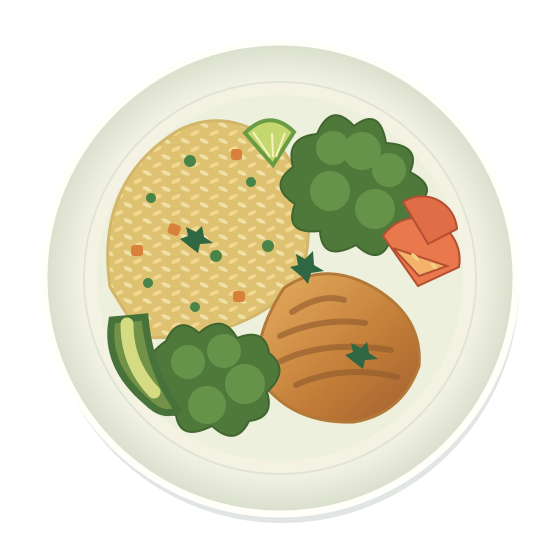

Encuentra tu próximo plato.
Explora recetas según el tiempo, el tipo de comida y tu presupuesto.
MENOS IMPROVISAR. MÁS DISFRUTAR.
Elige lo que te provoca, organiza tu menú y reúne los ingredientes en una sola lista. Cocinar en casa empieza con un buen plan.

UN PLAN SENCILLO
Menos listas sueltas y productos repetidos.
Más espacio para lo que te gusta hacer.
Explora recetas según el tiempo, el tipo de comida y tu presupuesto.
Elige el día, almuerzo o cena, y cuántas personas se sentarán a la mesa.
Sumamos ingredientes repetidos y repartimos el presupuesto entre tus roomies.
LA SEMANA SABE MEJOR ASÍ
Demo académica · Recetas, precios y disponibilidad ilustrativos.
UN POCO DE ORDEN, MUCHO SABOR
Cada espacio admite una receta. Puedes editar sus porciones o reemplazarla al elegir otra. Los cambios actualizan la lista automáticamente.
UNA LISTA, CERO DUPLICADOS
Las cantidades se suman según tus recetas y porciones. Marca lo que ya tienes para descontarlo del presupuesto.
DISEÑADO DESDE LA VIDA UNIVERSITARIA
Somos estudiantes de Ingeniería de Software de la Universidad Peruana de Ciencias Aplicadas. Nuestra propuesta «Modo Recetario / Carrito por Menú» busca simplificar la planificación de comidas y la compra de víveres para jóvenes independientes, parejas y roomies.
El concepto plantea integrar recetas y compras dentro de PedidosYa. Esta página presenta una demostración independiente del flujo de planificación.
SI720 · Diseño y Patrones de Software · 2026-2Es un prototipo académico independiente. La integración con supermercados, el stock en tiempo real, los pagos y las entregas forman parte de la propuesta futura.
Se guarda localmente en este navegador, si el almacenamiento está disponible. El enlace compartido contiene una copia del menú; cada persona puede modificar su propia copia. No hay edición simultánea ni cuentas de usuario.
Son valores de ejemplo en soles, calculados según los ingredientes utilizados. No representan cotizaciones de tiendas. Revisa precios, cantidades, información alimentaria e instrucciones antes de hacer una compra o preparar una receta.